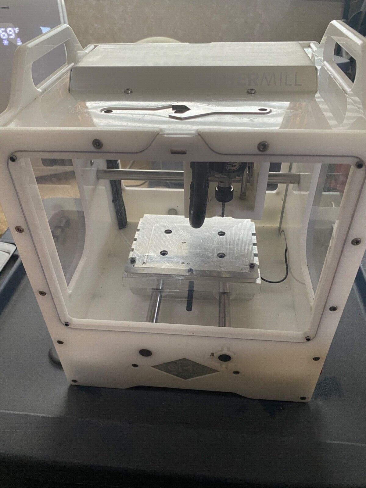

Courtenay's Assignment 4

For this project, my goal was to explore CNC milling. I set out to design a box with e.g. boxjoints/fingerjoints, tabs, or another joining method that could be milled out of FR1 on the Othermill.
With direct support from our wonderful teaching assistant, Junchao, I learned how to create these shapes in Rhino that I would later cut on the Othermill.
Here is the Rhino model that I initially started with:


Rhino 7 file (my learning in progress!)
After finishing the tutorial, I documented a couple more shots of my final Grasshopper definition and Rhino model:
I went to the makerspace to laser cut and... to be continued!